Welcome: Keep What Works
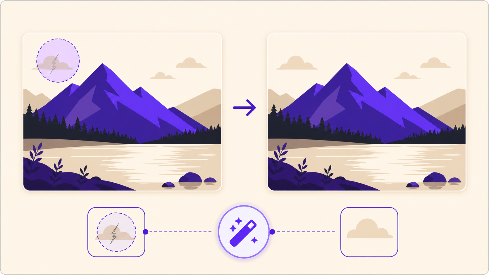
Lesson 7 shifts from full generation to selective revision. Your mission is to keep what works, repair what fails, expand what is missing, and document each decision.
Learning Objectives
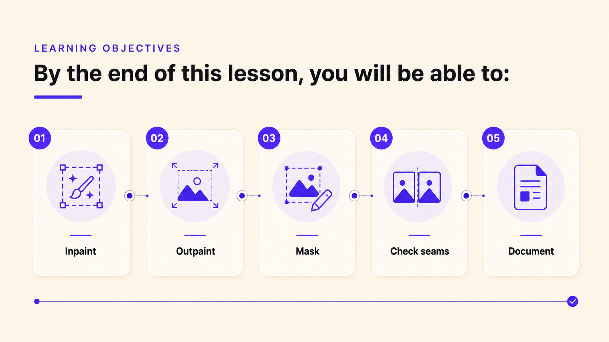
- Explain the difference between full image generation and partial generation.
- Define inpainting, outpainting, masking, seam quality, and prompt-based image editing.
- Use inpainting to correct errors, remove unwanted elements, or replace selected parts of an image.
- Use outpainting to expand an image beyond its original frame while maintaining style, lighting, and perspective.
- Decide when partial generation is more appropriate than regenerating an entire image.
- Write effective prompts for inpainting and outpainting tasks.
- Evaluate whether edited or expanded areas match the original image.
- Document a partial-generation workflow using prompts, masks, iterations, and critical evaluation.
Lesson Map: From Repair Decision to Partial-Generation Workflow
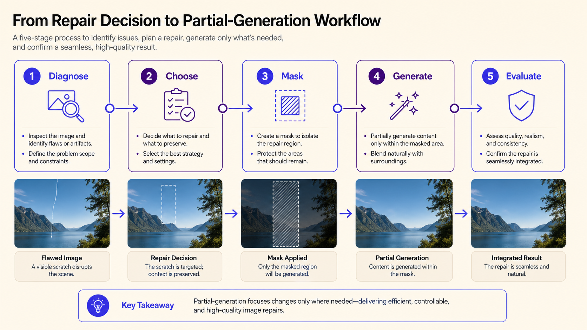
| Mission | Interaction type | Main skill |
|---|---|---|
| 1. Repair radar | Fast quiz + gap-fill | Recognize when a local edit is better than a full restart. |
| 2. Full vs partial generation | Matching + click-to-reveal | Distinguish whole-image creation from selective revision. |
| 3. Inpainting basics | Hotspot-style mask task | Identify edit zones and mask boundaries. |
| 4. Mask design studio | Drag-and-drop decision task | Choose mask size and context margins. |
| 5. Local edit prompt builder | Gap-fill + prompt construction | Write prompts with replacement content and consistency requirements. |
| 6. Object replacement lab | Hands-on guided activity | Replace an object while preserving light, scale, and perspective. |
| 7. Outpainting for layout | Canvas expansion challenge | Extend a frame for slide, poster, banner, or typography space. |
| 8. Seam quality detective | Diagnostic cards + hotspot review | Evaluate whether edited regions blend with the original. |
| 9. Workflow decisions | Scenario decisions | Choose repair, outpaint, regenerate, manual edit, or refuse. |
| 10. Hybrid workflow | Sequencing activity | Combine AI editing, manual design, typography, and evaluation. |
| 11. Final Boss | Mini project | Create and defend a documented partial-generation result. |
Partial Generation as Selective Revision
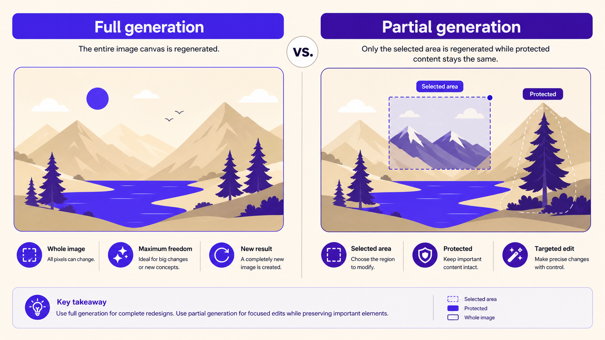
Partial generation means generating, repairing, replacing, or extending only part of an image instead of creating a whole new image. The professional shift is selective revision: keep successful areas and change only what needs repair, replacement, or expansion.
Warm-Up Mission: Repair Radar
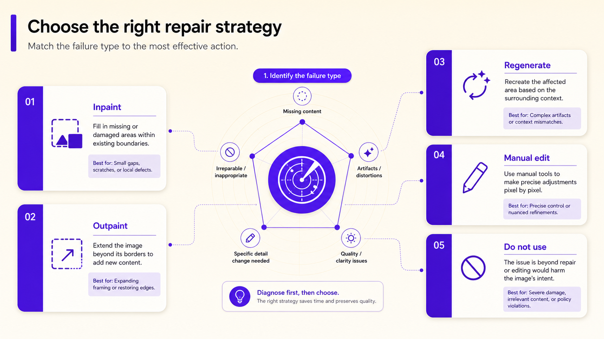
Choose the most appropriate first strategy for each problem. Some cases may have more than one reasonable answer; justify your choice.
Inpainting, Masks, and Local Editing
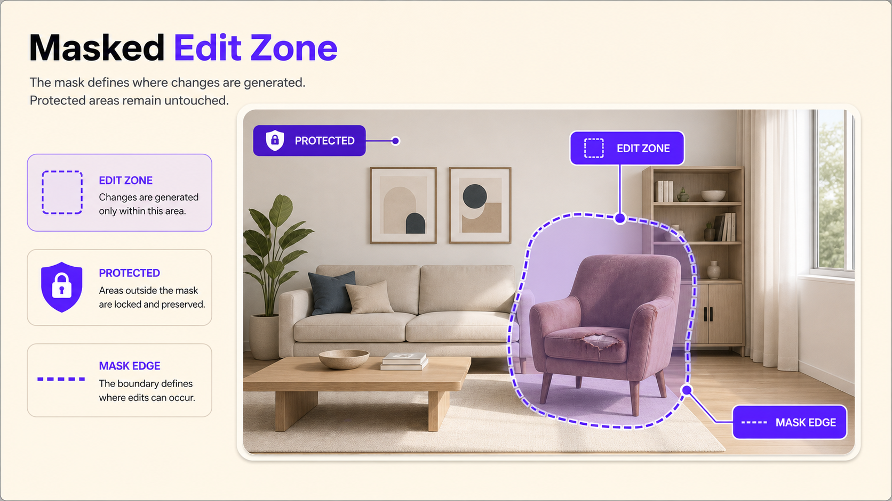
Inpainting edits a selected region inside an existing image. The selected region is defined by a mask. The mask is not only a technical tool; it is a design boundary: it tells the system where it may change the image and what must remain protected.
Inpainting Prompt Builder
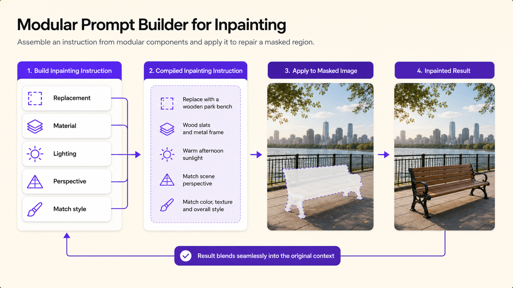
Build a local edit prompt with replacement content, consistency instructions, and constraints.
| Prompt component | Your text |
|---|---|
| Replacement content | |
| Consistency instruction | |
| Constraints / negative prompt | |
| Final inpainting prompt |
Activity: Mask Design Studio
For each scenario, decide whether the mask should be small, context margin, large, or start over.
| Scenario | Best mask strategy | Feedback |
|---|---|---|
| A hand has six fingers, but the wrist and sleeve look correct. | Context margin | Mask the hand plus a small margin around the wrist and object contact so the repair can blend. |
| A fake word appears on a clean wall. | Context margin | Mask the fake text plus nearby wall texture; request clean wall texture and no letters. |
| The entire character is wrong, but the background is useful. | Large mask or regenerate | A large mask may work if the background is worth preserving, but full regeneration may be faster. |
| One small artifact appears on a table surface. | Small or context margin | Include enough surrounding texture to avoid a visible patch. |
| The composition, subject, lighting, and style are all wrong. | Start over | The issue is not local. Inpainting would likely waste time. |
Activity: Inpainting Error Correction Lab
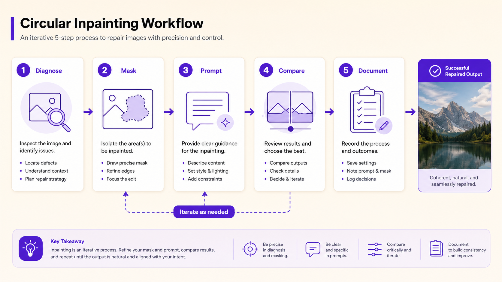
Select an image where most elements work but one local detail fails. Mask only the problem area plus necessary context. Write an edit prompt and generate or simulate at least two repair attempts.
| Stage | Student notes |
|---|---|
| Original image problem | |
| Why this image is worth repairing | |
| Masked area | |
| Mask too small / useful / too large? | |
| Inpainting prompt | |
| Negative prompt or constraint | |
| Attempt 1 result | |
| Attempt 2 result | |
| Best result chosen | |
| Remaining problem | |
| Next improvement |
Activity: Object Replacement Without Losing Context
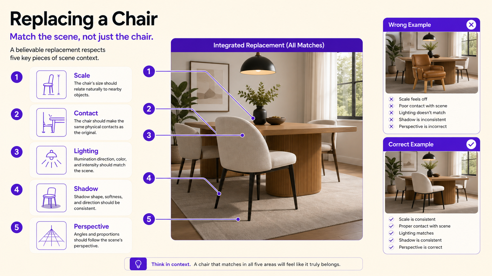
Choose or imagine an image with a replaceable object such as a laptop, coffee cup, screen, poster, chair, or prop. Decide what object should replace it and why.
| Replacement decision | Student notes |
|---|---|
| Original object | |
| Replacement object | |
| Reason for replacement | |
| Nearby context to preserve | |
| Mask strategy | |
| Object-replacement prompt | |
| What matched well? | |
| What still failed? |
Outpainting, Seam Quality, and Workflow Evaluation
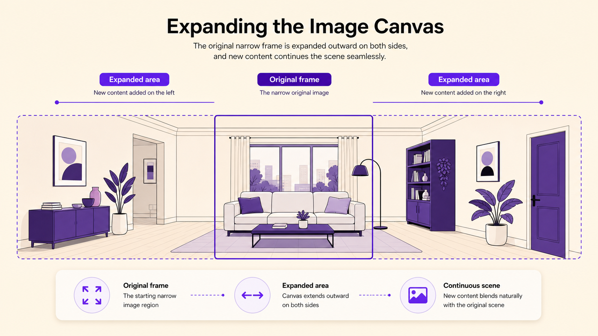
Outpainting extends an image beyond its original borders. It is useful when the image needs a wider frame, a different aspect ratio, more background, or empty space for typography. The generated area must continue the original image logic.
Activity: Outpainting for Composition and Typography Space
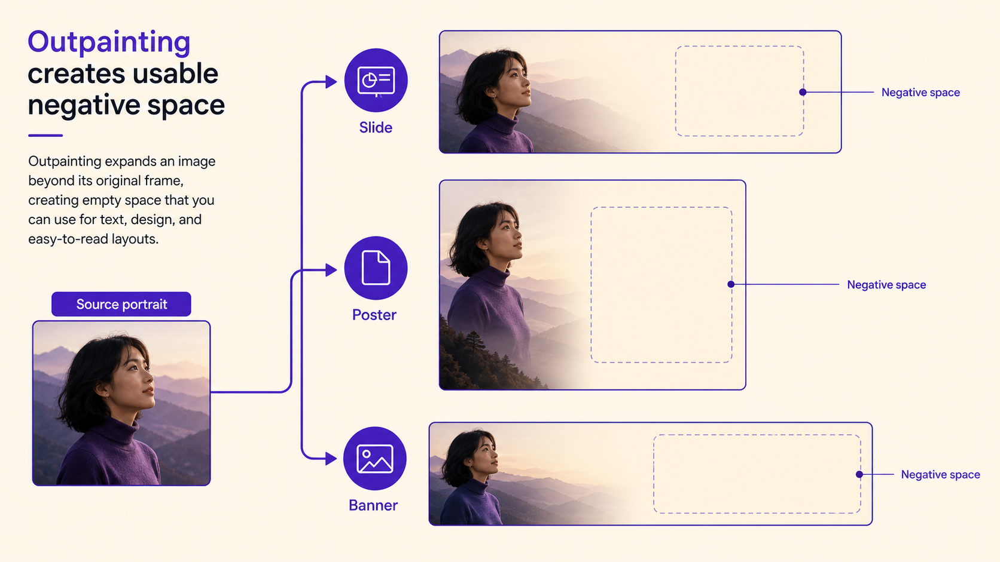
Select a visually strong image that is too narrow, centered, or crowded. Choose a target purpose, expand the canvas, and write a prompt that describes continuation of the scene, not a new scene.
| Planning question | Your answer |
|---|---|
| Source image description | |
| Target purpose | |
| Direction of expansion | |
| What must remain stable? | |
| Outpainting prompt | |
| Constraints |
| Criterion | Original | Outpainted version | Notes |
|---|---|---|---|
| Aspect ratio | |||
| Composition | |||
| Lighting match | |||
| Perspective match | |||
| Seam visibility | |||
| Texture continuity | |||
| Usefulness for typography | |||
| Unwanted text or objects | |||
| Overall usability |
Activity: Seam Quality Detective
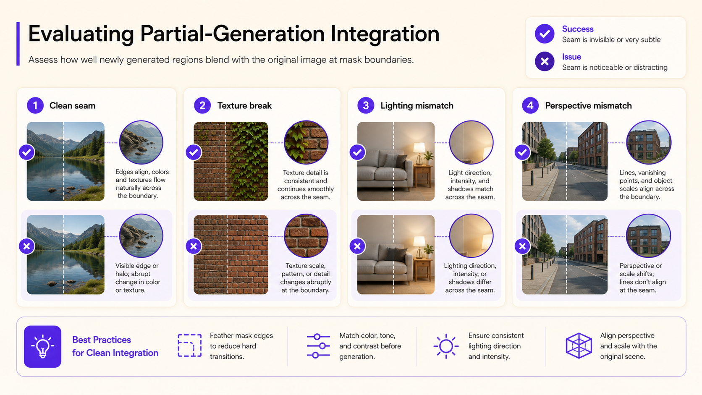
Inspect an edited or expanded image. Place diagnostic cards on the area where each issue appears, or select the card that best describes the problem.
Partial Generation Evaluation Matrix
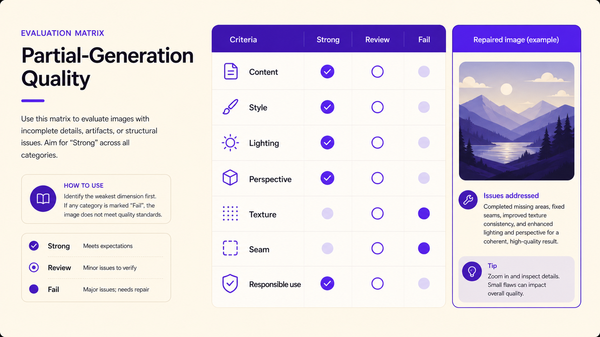
A high-quality partial-generation result is not only visually attractive. It must match the original image, serve the final purpose, and avoid new technical or ethical problems.
| Criterion | Guiding question | Score 1–5 |
|---|---|---|
| Content accuracy | Did the edit add, remove, correct, or extend what was intended? | |
| Style match | Does the edited area belong to the same visual language as the original? | |
| Lighting match | Are shadows, highlights, and direction of light coherent? | |
| Perspective | Does the new content follow the same viewpoint and spatial logic? | |
| Texture | Do surfaces, grain, material detail, and sharpness match nearby areas? | |
| Seam quality | Is the boundary invisible or acceptable? | |
| Responsible use | Does the edit avoid misleading, non-consensual, copyrighted, or harmful content? |
Choosing the Right Workflow
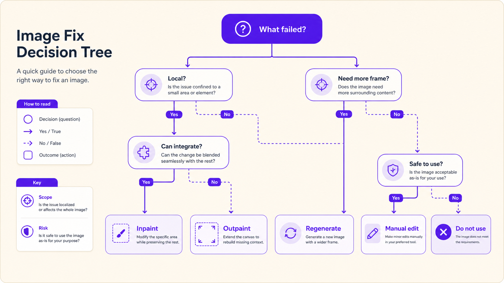
Partial generation is powerful, but it is not always the right answer. Some problems are local and repairable; others require expansion, manual editing, regeneration, or non-use.
Hybrid Workflow Sequencing
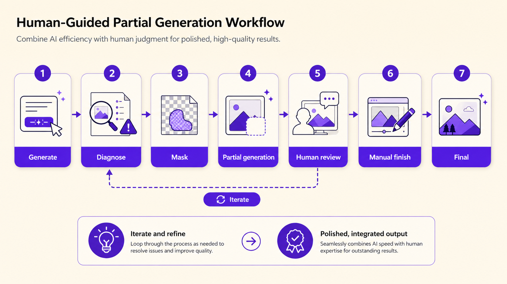
Put the workflow steps in the most logical order. In SCORM, these can be draggable cards.
| Correct order | Workflow step | Why it matters |
|---|---|---|
| 1 | Select source image and define purpose. | The workflow depends on whether the image is for poster, slide, banner, storyboard, or critique. |
| 2 | Diagnose what works and what fails. | Preserve successful elements and target only necessary changes. |
| 3 | Choose strategy: inpaint, outpaint, regenerate, manual edit, or refuse. | Not every problem needs the same tool. |
| 4 | Create mask or expand canvas. | Defines what changes and what stays protected. |
| 5 | Write local edit or continuation prompt. | Guides content, style, lighting, perspective, and constraints. |
| 6 | Generate attempt and compare with original. | Evidence-based comparison prevents random approval. |
| 7 | Repair artifacts or revise one variable. | Iteration improves control. |
| 8 | Add manual typography/layout/retouching if needed. | Some tasks need human-controlled tools. |
| 9 | Evaluate responsible use and final purpose. | Checks meaning, context, rights, and possible harm. |
| 10 | Document prompt, mask, attempts, result, and next decision. | Makes the process explainable and assessable. |
Partial Generation Documentation Log
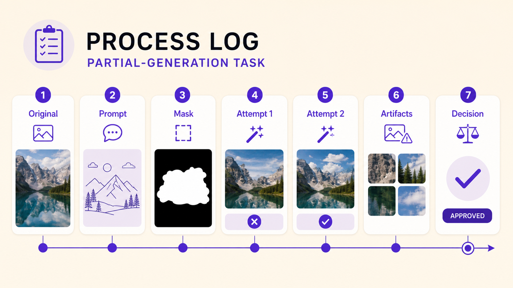
| Field | Student notes |
|---|---|
| Source image | |
| Image purpose | |
| Problem or expansion need | |
| Chosen strategy: inpainting / outpainting / regeneration / manual editing / refuse | |
| Mask or expansion area | |
| Prompt used | |
| Negative prompt or constraints | |
| Attempt 1 observation | |
| Attempt 2 observation | |
| Artifacts introduced | |
| Best result and reason | |
| Final decision | |
| What would improve the next version? |
Final Boss Challenge: Rescue and Expand the Image
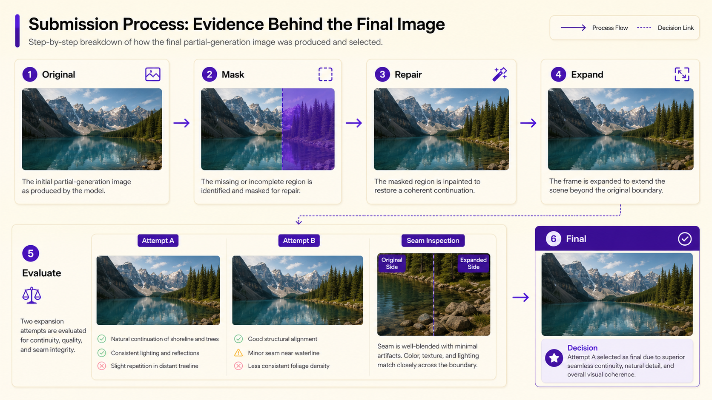
| Part | Task | Student output |
|---|---|---|
| A. Diagnose | Identify what works and what fails in the source image. | |
| B. Choose workflow | Decide what to inpaint, what to outpaint, and what remains unchanged. | |
| C. Write prompts | Create one inpainting prompt and one outpainting prompt. | |
| D. Generate / simulate | Produce or describe two attempts and choose the strongest version. | |
| E. Evaluate | Use criteria: content, style, lighting, perspective, texture, seam, narrative, technical quality, responsible use. | |
| F. Present | Prepare a 60-second explanation of what was preserved, changed, and documented. |
| Presentation sentence starter | Your version |
|---|---|
| The original image was worth preserving because... | |
| The local problem I repaired was... | |
| My mask strategy was... | |
| The frame expansion was needed because... | |
| The strongest evidence that the edit works is... | |
| One remaining limitation is... | |
| The most important workflow decision was... |
Final Assessment
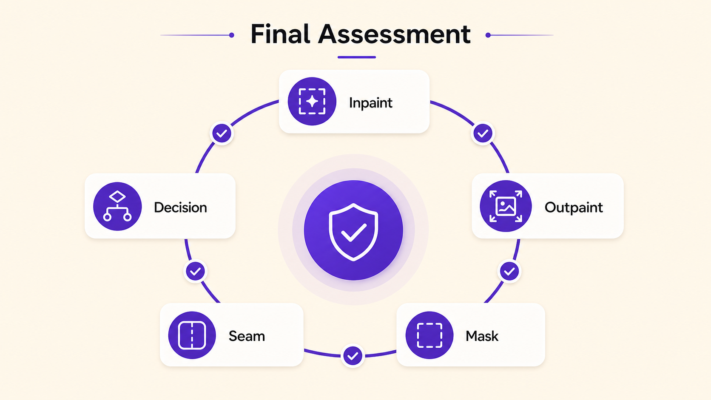
Short answer
| Question | Your answer |
|---|---|
| Explain when you would repair an image with inpainting instead of regenerating it. | |
| Write an outpainting prompt for expanding a square studio image into a horizontal slide banner. | |
| Name three criteria for evaluating a partial-generation result. |
Exit Ticket and Completion
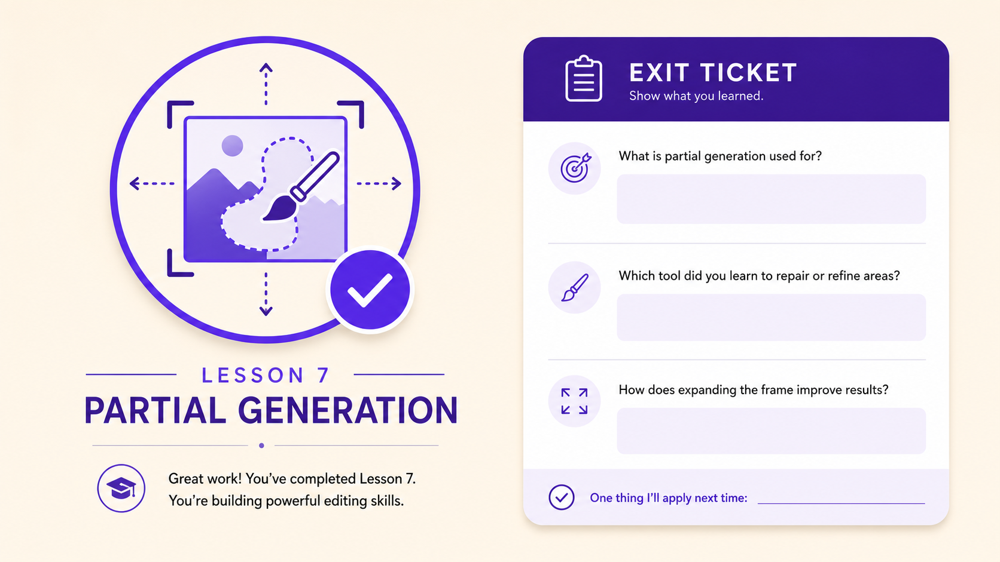
Partial generation supports professional image workflows because it preserves successful areas while repairing, replacing, or expanding only what needs to change.
| Prompt | Your answer |
|---|---|
| One successful element I should try to preserve is... | |
| One local problem that can often be repaired is... | |
| One situation where outpainting is useful is... | |
| One sign of poor seam quality is... | |
| One situation where I should not use or publish an edited image is... |
| Task | Complete |
|---|---|
| Completed the Repair Radar warm-up. | ☐ |
| Distinguished full generation, inpainting, outpainting, manual editing, and hybrid workflow. | ☐ |
| Completed at least three gap-fill activities. | ☐ |
| Chose mask strategies for local-edit scenarios. | ☐ |
| Wrote at least one inpainting prompt. | ☐ |
| Completed or simulated one inpainting error correction. | ☐ |
| Wrote at least one outpainting prompt. | ☐ |
| Evaluated seam quality using diagnostic cards. | ☐ |
| Completed the repair/outpaint/regenerate/refuse decision challenge. | ☐ |
| Completed the final partial-generation mini-challenge or planning template. | ☐ |
| Completed the final assessment and exit ticket. | ☐ |